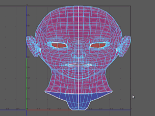
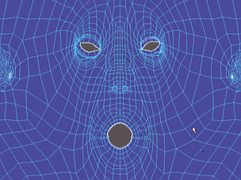

展开 UV 网格是指切割 UV 网格中的接缝，然后沿该接缝展开的过程。
展开 UV 网格
- 准备展开 UV 网格。
- 在“UV 编辑器”(UV Editor)中，选择网格上要展开的 UV。
- 在“UV 工具包”(UV Toolkit)中，选择（或者，在菜单栏中选择“UV > 展开”(UV > Unfold) >
 来自定义选项）。
来自定义选项）。
- 在“展开 UV 选项”(Unfold UVs options)窗口中。特别是：
- 如果将“方法”(Method)设置为“Unfold3D”，任何未选定的 UV 均会自动固定。
- 如果将“方法”(Method)设置为“旧版”(Legacy)，则仅固定选定 UV。
- 单击“应用并关闭”(Apply and Close)。
- 如果要停止展开操作，请按 Esc 键。
或者，您可以使用“展开工具”(Unfold Tool)（在“UV 工具包”(UV Toolkit)中选择，或在菜单栏中选择）以交互方式在要展开的区域上绘制。这仅适用于 Unfold3D
方法。

注： 在“工具设置”(Tool Settings)中，可以快速在“展开”(Unfold)与“优化工具”(Optimize Tool)之间切换。
注： 您可以固定 UV，防止它们在展开操作期间移动。